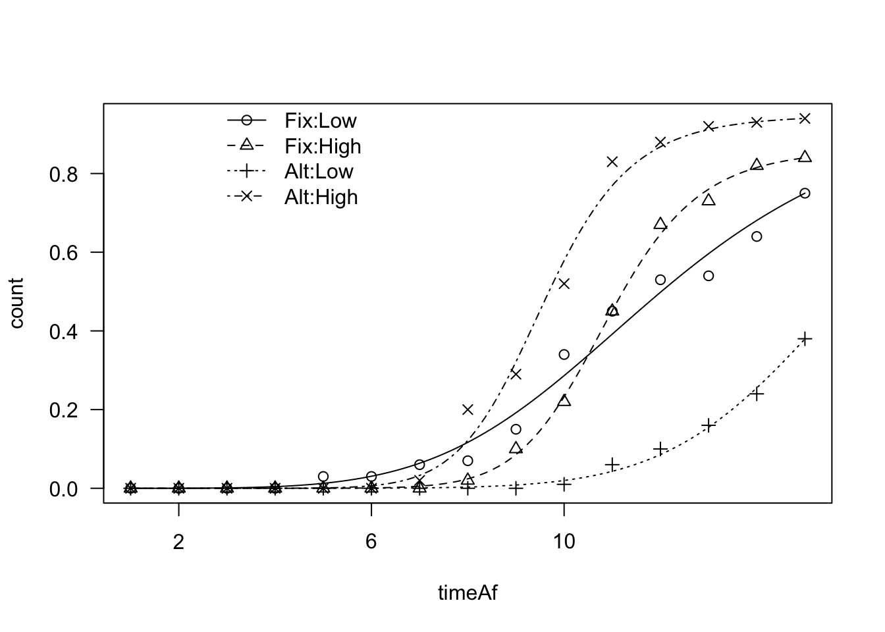
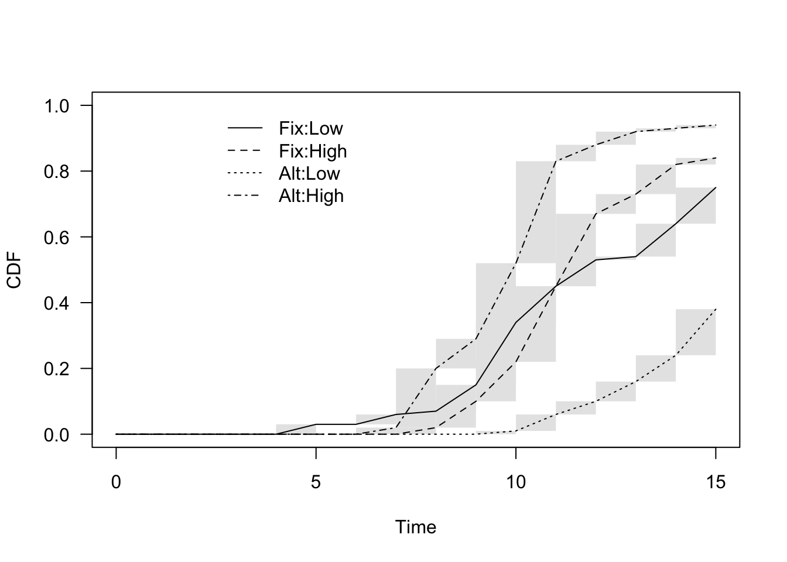
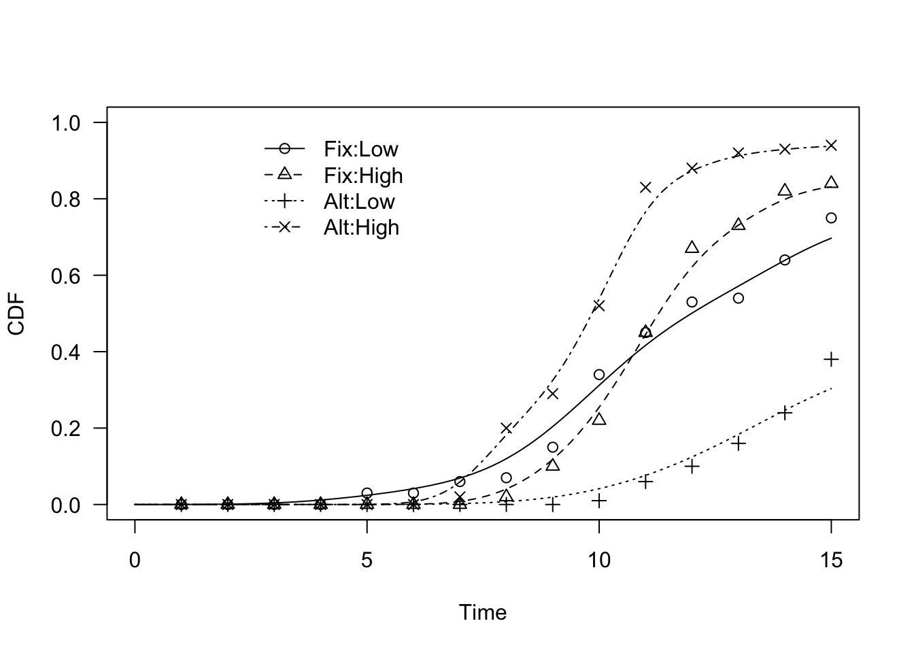

Section 5 Comparing the time course of events for several groups
Very often, seed scientists need to compare the germination behavior of different seed populations, e.g., different plant species, or one single plant species submitted to different temperatures, light conditions, priming treatments and so on. How should such a comparison be performed? For example, if we have submitted several seed samples to different environmental conditions, how do we decide whether the germinative response is affected by those environmental conditions?
If the case that we have replicates for all experimental treatments, e.g. several Petri dishes, one possible line of attack is to take a summary measure for each dish and use that for further analyses, in a two-steps fashion. For example, we could take the total number of germinated seeds (Pmax) in each dish and use the resulting values to parameterise some sort of ANOVA-like model and test the significance of all effects.
This method of data analysis is known as ‘response feature analysis’ and it may be regarded as ‘very traditional’, in the sense that it is often found in literature; although it is not wrong, it is, undoubtedly, sub-optimal. Indeed, two seed lots submitted to different treatments may show the same total number of germinated seeds, but a different velocity or uniformity of germination. In other words, if we only consider, e.g., the Pmax, we can answer the question: “do the seed lots differ for their germination capability?”, but not the more general question: “are the seed lots different?”.
In order to answer this latter question, we should consider the entire time-course of germination and not only one single summary statistic. In other words, we need a method to fit and compare several time-to-event curves.
5.1 A motivating example
Let’s take a practical approach and start from an example: a few years ago, some colleagues of mine studied the germination behavior of a plant species (Verbascum arcturus), in different conditions. In detail, they considered the factorial combination of two storage periods (LONG and SHORT storage) and two temperature regimes (FIX: constant daily temperature of 20°C; ALT: alternating daily temperature regime, with 25°C during daytime and 15°C during night time, with a 12:12h photoperiod). If you are a seed scientist and are interested in this experiment, you’ll find detail in Catara et al. (2016).
If you are not a seed scientist, you may wonder why my colleagues made such an assay; well, there is evidence that, for some plant species, the germination ability improves over time, after seed maturation. Therefore, if we take seeds and store them for different periods of time, there might be an effect on their germination traits. Likewise, there is also evidence that germinations may be hindered if seed is not submitted to daily temperature fluctuations. For seed scientists, all these mechanisms are very important, as they permit to trigger the germinations when the environmental conditions are favorable for seedling survival.
Let’s go back to our assay: the experimental design consisted of four experimental ‘combinations’ (LONG-FIX, LONG-ALT, SHORT-FIX and SHORT-ALT) and four replicates for each combination. One replicate consisted of a Petri dish, that is a small plastic box containing humid blotting paper, with 25 seeds of V. arcturus. In all, there were 16 Petri dishes, which were put in climatic chambers with the appropriate conditions. During the assay, my colleagues made daily inspections: germinated seeds were counted and removed from the dishes. Inspections were made for 15 days, until no more germinations could be observed.
The original dataset is available from a gitHub repository: let’s load and have a look at it.
rm(list = ls())
datasetOr <- read.csv("https://raw.githubusercontent.com/OnofriAndreaPG/agroBioData/master/TempStorage.csv", header = T, check.names = F)
head(datasetOr)
## Dish Storage Temp 1 2 3 4 5 6 7 8 9 10 11 12 13 14 15
## 1 1 Low Fix 0 0 0 0 0 0 0 0 3 4 6 0 1 0 3
## 2 2 Low Fix 0 0 0 0 1 0 0 0 2 7 2 3 0 5 1
## 3 3 Low Fix 0 0 0 0 1 0 0 1 3 5 2 4 0 1 3
## 4 4 Low Fix 0 0 0 0 1 0 3 0 0 3 1 1 0 4 4
## 5 5 High Fix 0 0 0 0 0 0 0 0 1 2 5 4 2 3 0
## 6 6 High Fix 0 0 0 0 0 0 0 0 2 2 7 8 1 2 1We have one row per Petri dish; the first three columns show, respectively, the dish number, storage and temperature conditions. The next 15 columns represent the inspection times (from 1 to 15) and contain the counts of germinated seeds. The research question is:
Is germination behavior affected by storage and temperature conditions?
5.2 Fitting several time-to-event curves
The original dataset for our example is in a WIDE format and, as we have shown earlier in this tutorial, it is necessary to reshape it in LONG GROUPED format, by using the melt_te() function in the ‘drcte’ package.
The melt_te() function needs to receive the columns storing the counts (‘count_cols = 4:18’), the columns storing the factor variables (‘treat_cols = c(“Dish”, “Storage”, “Temp”)’), a vector of monitoring times (‘monitimes = 1:15’) and a vector with the total number of seeds in each Petri dish (‘n.subjects = rep(25,16)’).
library(drcte)
dataset <- melt_te(datasetOr, count_cols = 4:18,
treat_cols = c("Dish", "Storage", "Temp"),
monitimes = 1:15, n.subjects = rep(25, 16))
head(dataset, 16)
## Dish Storage Temp Units timeBef timeAf count nCum propCum
## 1 1 Low Fix 1 0 1 0 0 0.00
## 2 1 Low Fix 1 1 2 0 0 0.00
## 3 1 Low Fix 1 2 3 0 0 0.00
## 4 1 Low Fix 1 3 4 0 0 0.00
## 5 1 Low Fix 1 4 5 0 0 0.00
## 6 1 Low Fix 1 5 6 0 0 0.00
## 7 1 Low Fix 1 6 7 0 0 0.00
## 8 1 Low Fix 1 7 8 0 0 0.00
## 9 1 Low Fix 1 8 9 3 3 0.12
## 10 1 Low Fix 1 9 10 4 7 0.28
## 11 1 Low Fix 1 10 11 6 13 0.52
## 12 1 Low Fix 1 11 12 0 13 0.52
## 13 1 Low Fix 1 12 13 1 14 0.56
## 14 1 Low Fix 1 13 14 0 14 0.56
## 15 1 Low Fix 1 14 15 3 17 0.68
## 16 1 Low Fix 1 15 Inf 8 NA NAIn the resulting data frame, the column ‘timeAf’ contains the time when the inspection was made and the column ‘count’ contains the number of germinated seeds (e.g. 9 seeds were counted at day 9). These seeds did not germinate exactly at day 9; they germinated within the interval between two inspections, that is between day 8 and day 9. The beginning of the interval is given as the variable ‘timeBef’. Apart from these three columns, we have the columns for the blocking factor (‘Dish’ and ‘Units’; this latter column is added by the R function, but it is not useful in this case) and for the treatment factors (‘Storage’ and ‘Temp’) plus two other additional columns (‘nCum’ and ‘propCum’), which we are not going to use for our analyses.
In this case, we have reasons to believe that the germination time-course can be described by using a parametric log-logistic time-to-event model, which can be estimated by using either the drm() function in the ‘drc’ package (Ritz et al., 2019) or the drmte() function in the ‘drcte’ package (Onofri et al., 2022). In both cases, we have to include the experimental factor (‘curveid’ argument), to specify that we want to fit a different curve for each combination of storage and temperature.
library(tidyverse)
library(drcte)
dataset <- dataset %>%
mutate(across(1:3, .fns = factor))
mod1 <- drmte(count ~ timeBef + timeAf, fct = loglogistic(),
data = dataset,
curveid = Temp:Storage)
summary(mod1)
##
## Model fitted: Log-logistic distribution of event times
##
## Robust estimation: no
##
## Parameter estimates:
##
## Estimate Std. Error t-value p-value
## b:Fix:Low 4.974317 0.819632 6.0690 1.287e-09 ***
## b:Fix:High 11.476618 1.254439 9.1488 < 2.2e-16 ***
## b:Alt:Low 7.854558 5.239825 1.4990 0.1339
## b:Alt:High 10.600439 1.014061 10.4534 < 2.2e-16 ***
## d:Fix:Low 0.998474 0.150189 6.6481 2.968e-11 ***
## d:Fix:High 0.861711 0.038987 22.1027 < 2.2e-16 ***
## d:Alt:Low 1.405930 5.607576 0.2507 0.8020
## d:Alt:High 0.948113 0.024298 39.0208 < 2.2e-16 ***
## e:Fix:Low 12.009974 0.987039 12.1677 < 2.2e-16 ***
## e:Fix:High 10.906963 0.190532 57.2447 < 2.2e-16 ***
## e:Alt:Low 17.014976 13.214513 1.2876 0.1979
## e:Alt:High 9.585255 0.166937 57.4183 < 2.2e-16 ***
## ---
## Signif. codes: 0 '***' 0.001 '**' 0.01 '*' 0.05 '.' 0.1 ' ' 1In a previous post I have described a log-logistic time-to-event model (see here), which has a sygmoidal shape, with the three parameters \(b\), \(d\) and \(e\). These parameters represent, respectively, the slope at inflection point, the higher asymptote (i.e. the maximum proportion of germinated seeds) and the median germination time. As we have four curves, we have a number of 12 estimated parameters.
We see that the optimization routines returns an unreasonable value for the higher asymptote for one of the curves (\(d\) = 1.40 with Alt:Low); it is unreasonable because the maximum proportion of germinated seeds may not exceed 1. Therefore, we should refit the model by adding a constraint (\(d \le 1\)) for all the four curves. We can do so by setting the ‘upperl’ argument to 1 for the 5th through 8th estimands.
mod1 <- drmte(count ~ timeBef + timeAf, fct = loglogistic(),
data = dataset,
curveid = Temp:Storage,
upperl = c(NA, NA, NA, NA, 1, 1, 1, 1, NA, NA, NA, NA))
summary(mod1)
##
## Model fitted: Log-logistic distribution of event times
##
## Robust estimation: no
##
## Parameter estimates:
##
## Estimate Std. Error t-value p-value
## b:Fix:Low 4.979665 0.818414 6.0845 1.168e-09 ***
## b:Fix:High 11.471625 1.254025 9.1478 < 2.2e-16 ***
## b:Alt:Low 8.408186 2.232712 3.7659 0.0001659 ***
## b:Alt:High 10.605807 1.014523 10.4540 < 2.2e-16 ***
## d:Fix:Low 0.997284 0.149235 6.6826 2.347e-11 ***
## d:Fix:High 0.861709 0.038999 22.0955 < 2.2e-16 ***
## d:Alt:Low 1.000000 0.881644 1.1342 0.2566920
## d:Alt:High 0.948132 0.024282 39.0468 < 2.2e-16 ***
## e:Fix:Low 12.004534 0.981279 12.2336 < 2.2e-16 ***
## e:Fix:High 10.907108 0.190613 57.2213 < 2.2e-16 ***
## e:Alt:Low 15.903079 2.872327 5.5367 3.083e-08 ***
## e:Alt:High 9.585297 0.166873 57.4406 < 2.2e-16 ***
## ---
## Signif. codes: 0 '***' 0.001 '**' 0.01 '*' 0.05 '.' 0.1 ' ' 1
plot(mod1, log = "", legendPos = c(6, 1))
From the graph we see that there are visible differences between the fitted curves (the legend considers the curves in alphabetical order, i.e. 1: Fix-Low, 2: Fix-High, 3: Alt-Low and 4: Alt-High). Now, the question is: could we say that those differences are only due to chance (null hypothesis)?
In order to make such a test, we could compare the logarithm of the likelihood for the fitted model with the logarithm of the likelihood for a ‘reduced’ model, where all curves have been pooled into one common curve for all treatment levels. The higher the log-likelihood difference, the lowest the probability that the null is true (Likelihood Ratio Test; LRT).
A LRT for parametric models can be done with the compCDF() function in the ‘drcte’ package, as shown in the box below.
compCDF(mod1)
##
##
## Likelihood ratio test
## NULL: time-to-event curves are equal
##
## Observed LR value: 202.8052
## Degrees of freedom: 9
## P-value: 8.551556e-39We see that the LR value, that relates to the difference between the two log-likelihoods, is rather high and equal to 202; when the null is true, this LR value has an approximate Chi-square distribution; accordingly, we see that the P-level is very low and, thus, the null should be rejected.
It general, the results of LRTs should be taken with care, particularly when the observed data are not independent from one another. Unfortunately, the lack of independence is an intrinsic characteristic of germination/emergence assays, where seeds are, most often, clustered within Petri dishes or other types of containers.
In this example, we got a very low p-level, which leaves us rather confident that the difference between time-to-event curves is significant. More generally, instead of relying on a chi-square approximation, we should better use a grouped-permutation approach. This technique is based on the idea that, when the difference between curves is not significant, we should be able to freely permute the labels (treatment level) among Petri dishes (clustering units) and, consequently, build an empirical distribution for the LR statistic under the null (permutation distribution). The p-level is related to the proportion of LR values in the permutation distribution that are higher than the observed value (i.e.: 202.8)
In the code below, we show how we can do this. The code is rather slow and, therefore, we should not use a very high number of permutation; the default is 199, that gives us a minimum p-value of 0.005. We see that we can confirm that the difference between curves is highly significant.
compCDF(mod1, type = "permutation", units = dataset$Dishes)
##
Likelihood ratio test (permutation based)
## NULL: time-to-event curves are equal
##
## Observed LR value: 202.8052
## Degrees of freedom: 9
## Naive P-value: 8.551556e-39
## Permutation P-value (B = 199): 0.0055.3 Comparing non-parametric curves
In the above example, we have decided to fit a parametric time-to-event model. However, in other situations, we might be interested in fitting a non-parametric time-to-event model (NPMLE; see here) and compare the curves for different treatment levels. In practice, nothing changes with respect to the approach I have shown above: first of all, we fit the NPMLEs with the following code:
modNP <- drmte(count ~ timeBef + timeAf, fct = NPMLE(),
data = dataset,
curveid = Temp:Storage)
plot(modNP, log = "", legendPos = c(6, 1))
Next, we compare the non-parametric curves, in the very same fashion as above:
compCDF(modNP, units = dataset$Units)
## Exact Wilcoxon test (permutation form)
## NULL: time-to-event curves are equal
##
## level n Scores
## 1 Fix:Low 100 2.5350
## 2 Fix:High 100 6.4600
## 3 Alt:Low 100 -51.2275
## 4 Alt:High 100 42.2325
##
## Observed T value: 44.56
## Permutation P-value (B = 199): 0.005Obviously, with NPMLEs, a different test statistic is used in the background; the default one is the Wilcoxon rank sum score, although two types of log-rank scores are also implemented (Sun’s scores and Finkelstein’s scores; see Fay and Shaw 2010). Permutation based P-values are calculated and reported.
The approach is exactly the same with Kernel Density Estimators (KDE; see here). First we fit the four curves curves, by including the experimental factor as the ‘curveid’ argument:
modKD <- drmte(count ~ timeBef + timeAf, fct = KDE(),
data = dataset,
curveid = Temp:Storage)
plot(modKD, log = "", legendPos = c(6, 1))
Second, we compare those curves, by using the compCDF() function:
compCDF(modKD, units = dataset$Units)
## Permuting groups
## 1% 1% 2% 2% 3% 3% 4% 4% 5% 5% 6% 6% 7% 7% 8% 8% 9% 9% 10% 10% 11% 11%
## 12% 12% 13% 13% 14% 14% 15% 15% 16% 16% 17% 17% 18% 18% 19% 19% 20%
## 20% 21% 21% 22% 22% 23% 23% 24% 24% 25% 25% 26% 26% 27% 27% 28% 28%
## 29% 29% 30% 30% 31% 31% 32% 32% 33% 33% 34% 34% 35% 35% 36% 36% 37%
## 37% 38% 38% 39% 39% 40% 40% 41% 41% 42% 42% 43% 43% 44% 44% 45% 45%
## 46% 46% 47% 47% 48% 48% 49% 49% 50% 50% 51% 51% 52% 52% 53% 53% 54%
## 54% 55% 55% 56% 56% 57% 57% 58% 58% 59% 59% 60% 60% 61% 61% 62% 62%
## 63% 63% 64% 64% 65% 65% 66% 66% 67% 67% 68% 68% 69% 69% 70% 70% 71%
## 71% 72% 72% 73% 73% 74% 74% 75% 75% 76% 76% 77% 77% 78% 78% 79% 79%
## 80% 80% 81% 81% 82% 82% 83% 83% 84% 84% 85% 85% 86% 86% 87% 87% 88%
## 88% 89% 89% 90% 90% 91% 91% 92% 92% 93% 93% 94% 94% 95% 95% 96% 96%
## 97% 97% 98% 98% 99% 99% 100%
##
Permutation test based on a Cramer-von-Mises type distance (Barreiro-Ures et al., 2019)
## NULL HYPOTHESIS: time-to-event curves are equal
##
## level n D
## 1 Fix:Low 100 0.0579661
## 2 Fix:High 100 0.1347005
## 3 Alt:Low 100 4.1378209
## 4 Alt:High 100 3.8581487
##
## Observed D value = 2.0472
## P value = 0.005In this case, a Cramér‐von Mises type distance among curves is used (Barreiro-Ures et al., 2019), which, roughly speaking, is based on the integrated distance between the KDEs for the different groups and the pooled KDE for all groups. Permutation based P-values are also calculated and reported.